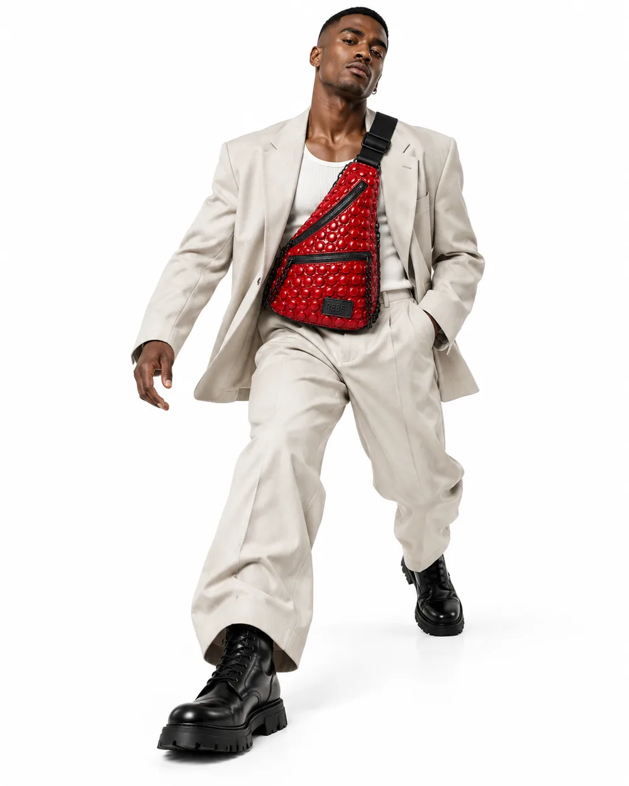
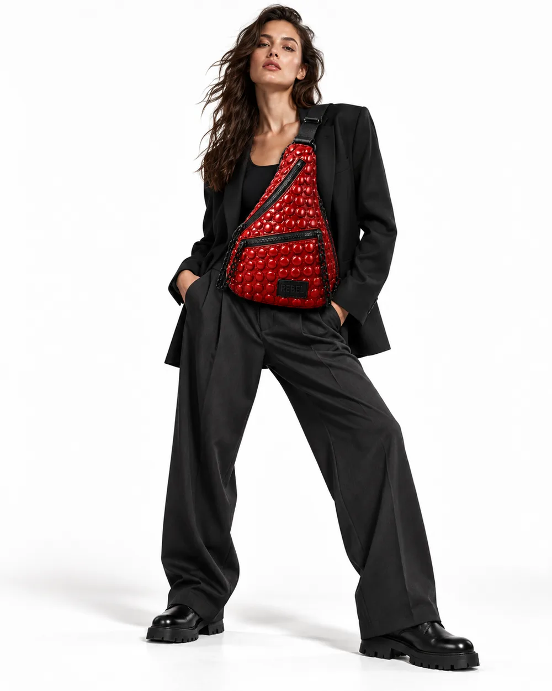
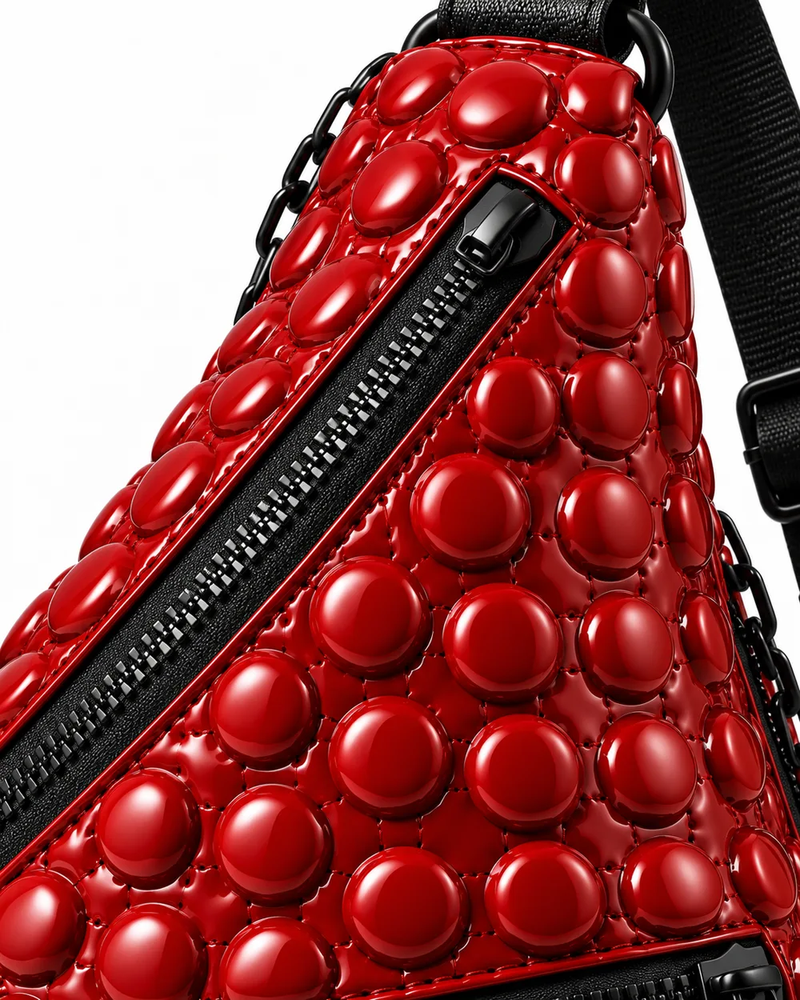
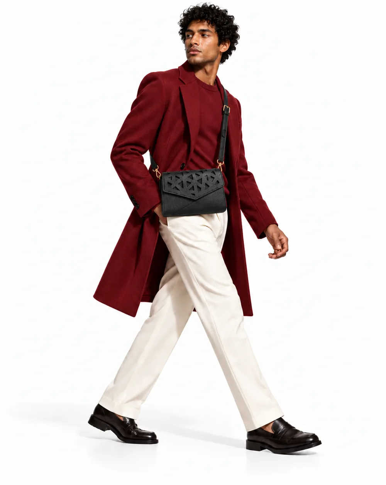
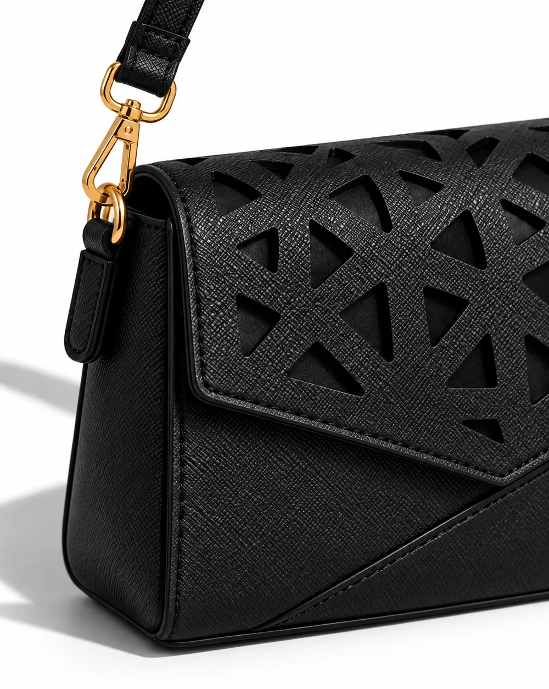

[ REBEL / LA TIENDA ]
OBJETOS QUE SALEN A LA CALLE
ELIGE TU
FORMA DE
REBELARTE.

LA CALLE, EN ESTUDIO / 01[ 01 / REBEL COLLECTION ]
EL RELIEVE SE MUEVE
01NO PASA
NO PASA
DESAPERCIBIDO.
El rojo, el punto y la calle. Piezas que cambian de gesto cuando se llevan puestas.
Ver las piezas REBEL

[ 02 / TROQUEL COLLECTION ]
LA FORMA DEJA HUECO

02HAZ SITIO
HAZ SITIO
AL VACÍO.
Recortes, sombras y nuevas siluetas. El detalle no adorna: construye la pieza.
Ver las piezas TROQUEL
Estudio visual de tienda. Piezas, disponibilidad y datos comerciales pendientes de definir.
[ EL ORIGEN ]